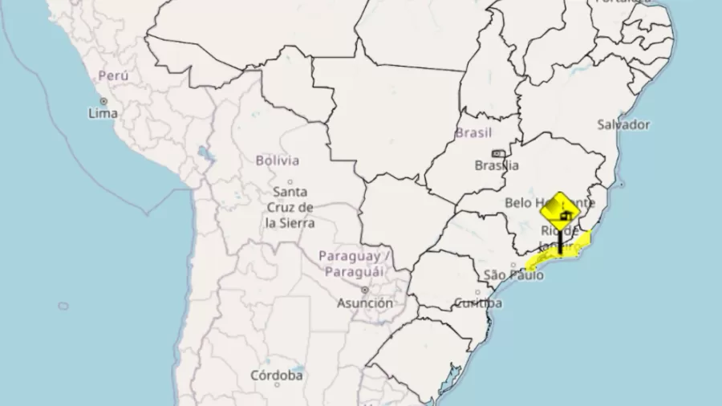
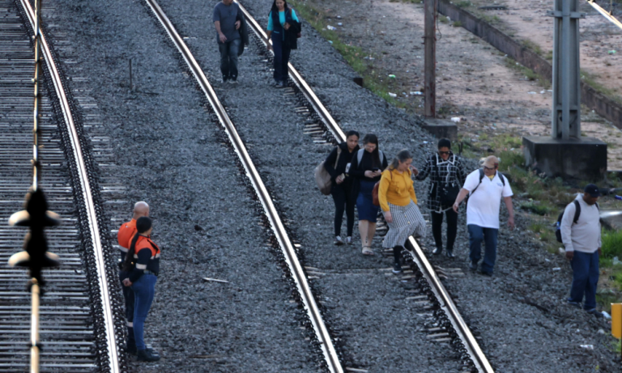

Inmet emite aviso amarelo para vendaval em São Paulo, Rio e Espírito Santo

Inmet (Instituto Nacional de Meteorologia) emitiu aviso de vendaval para os estados de São Paulo, do Rio de Janeiro e do Espírito Santo a partir de sexta-feira (21).
MPF aciona faculdade de MG por compra de cadáveres do Colônia de Barbacena
O MPF (Ministério Público Federal) entrou com uma ação civil pública contra a Faculdade de Ciências Médicas de Minas Gerais pela compra de ao menos 105 corpos de internos do Hospital Colônia de Barbacena para uso em aulas entre 1971 e 1975.
Trivia Trens se posiciona sobre CPTM operar linhas após caos em SP

A circulação dos trens em três linhas foi interrompida temporariamente após uma ocorrência afetar o fornecimento de energia entre as estações Brás e Sebastião Gualberto.
Gameplay de GTA 6 supostamente vaza, mostrando combate, fuga policial e basquete
A suposta gameplay que a Rockstar revelaria de GTA 6 em um evento exclusivo da Netflix em 27 de agosto foi vazada na internet, revelando mapas, fuga da polícia, combate e até Jason jogando basquete.
Xbox divulga lista de jogos da segunda leva do Game Pass em agosto de 2026
A Microsoft anunciou a programação da segunda leva de agosto de 2026 do Xbox Game Pass, que inclui vários lançamentos no primeiro dia.